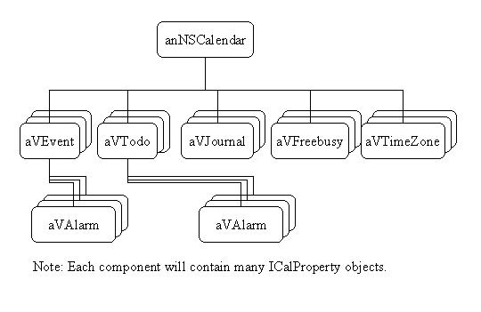
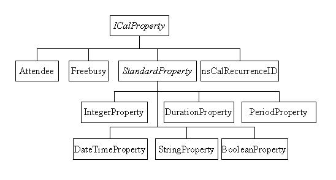

|
|
iCalendar Model Design
Last Updated: October 16, 1998.
The iCalendar Model classes represent iCalendar data.
iCalendar is the new Internet standard used to represent calendaring
and scheduling data.
The iCalendar Model Specification and other related documents can be
found at the Calendaring
and Scheduling IETF Group.
These classes do NOT follow the XPCOM model for modularizing code.
There is an ongoing effort to modular all the classes in this module.
The code for these classes can be found the mozilla/calendar/modules/core/ical.
Classes:
There are three levels of hierarchy in iCalendar, the calendar level, the
component level, and the property level.
Thus in the module, there are three level of classes:
NSCalendar
The NSCalendar class is used to contain a user's calendaring data.
Typically, an NSCalendar may contain several Calendar
components (events, todos, journals, timezone, and free-busy).
An NSCalendar may also contain individual properties, such as the name
of the calendar. A sample object (not class design) hierarchy of
an NSCalendar may look some like this:

Calendar Components
Class Hierarchy:

The Calendar Component classes represent iCalendar components.
Components include events, todos, journals, timezones, free-busy info,
and alarms.
Components contains calendar properties. Events and Todos may
also contain Alarm Components.
All classes must implement the ICalComponent interface.
(Abstract classes are italicized.)
-
ICalComponent - interface that all components must implement
-
TimeBasedEvent - an abstract class that encapsulates commonality
between VEvent, VTodo and VJournal.
-
VEvent - used to describe a calendar event. Examples of events
include a block of time event, or an-all day event such as a holiday.
-
VTodo - used to todo entry or task.
-
VJournal - represents a journal entry.
-
VFreebusy - represents the free-busy information of user during
a block of time.
-
VTimeZone - represents a iCalendar Timezone.
-
VAlarm - represents a notification of an event or todo.
Calendar Properties
Class Hierarchy:

The Property classes represent iCalendar properties.
For example, the starting time of an event is represented by the DTSTART
Property.
Each property has a type associated with it. Thus the Property
classes have been broken down by type.
All property must implement the ICalProperty interface, which components
use to communicate with.
(Abstract classes are italicized.)
-
ICalProperty - interface that all properties must implement.
-
Attendee - class used to represent the Attendee property
-
Freebusy - class used to represent the Freebusy property
-
nsCalRecurrenceID - class used to represent the Recurrence-ID property
-
StandardProperty - abstract class that encapsulates commonality
between all other properties. This class contains code to store parameters
in a generic sense.
-
DateTimeProperty - class to represent a DateTime property. (i.e.
DTSTART). Subclasses StandardProperty.
-
StringProperty - class to represent a String property. (i.e
DESCRIPTION) Subclasses StandardProperty.
-
BooleanProperty - class to represent a Boolean property. Subclasses
StandardProperty.
-
DurationProperty - class to represent a Duration property (i.e.
TRIGGER). Subclasses StandardProperty.
-
PeriodProperty - class to represent a Period property. Subclasses
StandardProperty.
-
IntegerProperty - class to represent a Integer property (i.e. PRIORITY).
Subclasses StandardProperty.
Author: John Sun
Last Updated: October 16, 1998.
|